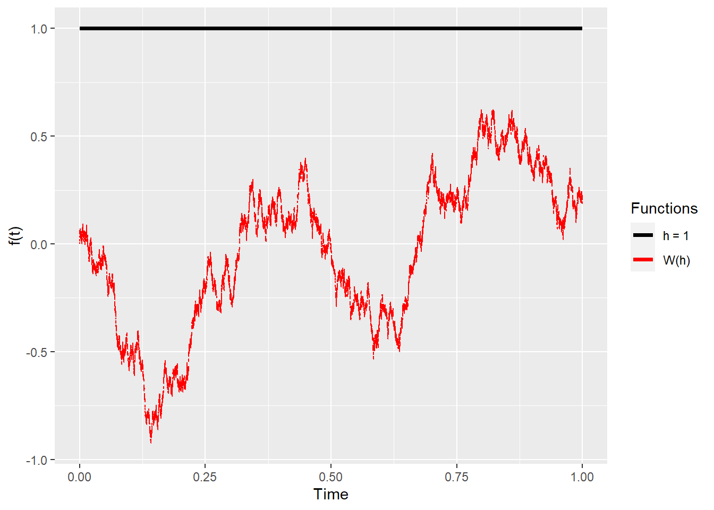
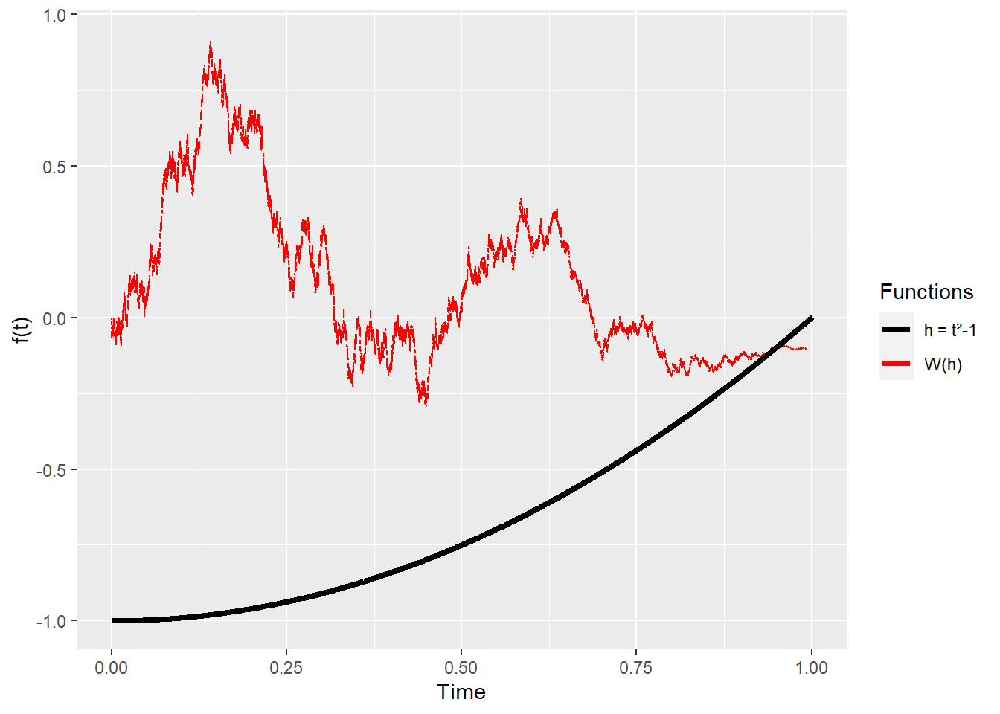

Now that we have established that Cameron-Martin directions allow us to change the integrals under Gaussian measures, we are ready to define the Malliavin derivative. We can do it from two directions:
We can talk about polynomial chaos, and then arrive to the derivative
We define the derivative, and not refer to polynomial chaos at all
We will follow the second approach for pedagogical reasons, collecting all the things we have learned. After that, we will follow Friz (2002) and Alos (2021) to bring all down to Earth.
Malliavin Derivative building blocks
We have accumulated a ton of knowledge. It’s time for us to approach the point of this entire webpage. When we asked the Question, we mentioned that the derivative of a random variable that follows a Brownian motion with respect to time can’t be calculated, that was the whole point: what kind of derivative can we calculate?
We will consider a Cameron-Martin direction of \(\hat{h}(\tau)=\int_0^\tau h\,dt\). Moreover, \(\hat{h}\in\hat{H}\) , the Cameron-Martin space. This definition allow us to have a derivative over time for the direction, so \(\frac{\partial \hat{h}(\tau)}{\partial \tau}=h\) , with \(h\in H = L^2[0,1]\), the space of functions that are continuous between 0 and 1, and that allow a 2-norm1.
Brownian motion paths up to \(\tau\) will be denoted as \(\omega(\tau)\). The function \(1_{[0,\tau]}\) is a function that’s \(1\) in the indicated interval and \(0\) everywhere else, behaving like a filter. Finally, we will define a function like \(W(1_{[0,\tau]})\) as a Brownian motion that’s multiplied by the filter . We will also use \(B_t\) and \(dB_t\) to reference Brownian motions, alongside \(W_t\) and \(dW_t\).
We will also consider a polynomial function2\(f\) that takes \(n\) Brownian motions as variables, each stopping at a different time. Two Brownian motions from \(0\) to \(t\) are essentially the same, even if their paths are different. So, each Brownian motion will go from \(0\) to \(t_1\) , \(t_2\), … \(t_n\) This function \(f\) is for the moment pretty useless and basic. We will find its use and extensions later.
Now, we will do something just like in the section for calculus of variations. Let’s have \(f(\omega + \varepsilon \hat{h})\). This means that we are moving each of the \(n\) Brownian motion path a bit along a Cameron-Martin direction, so all is good. Finally, we will take the derivative with respect to \(\varepsilon\) , and we will evaluate the derivative at \(\varepsilon = 0\). The Brownian motions, which can’t be derived, won’t be touched because they don’t depend on \(\varepsilon\).
This \(D\) is the Malliavin Derivative. It is a linear operator (like the ones we saw before) and it’s applied to \(F\). It means that if you have a function \(F\) with variables composed of these Brownian motions multiplied by these \(h_i\) functions, then you can apply this special derivative definition.
This \(F\) is very limited right now, but if you could represent, approximate or find an equivalence between the random variable you are interested in and a function like \(F\), then you could apply the derivative to the equivalence. A lot of the theory is to find those connections, we won’t bother to do that here unless I see it’s valuable.
At this point, the collection of \(h_i\) functions are a theoretical requirement and seem pulled out of thin air. For one, they aren’t more arbitrary than the displacement \(h\) from the classical derivative definition \(\lim_{h \rightarrow 0} \frac{f(x+h)-f(x)}{h}\). As we move forward, we will select the \(h_i \in H\) that will be suitable for our purposes. More theoretical sources may establish that \(h_i\) are orthonormal (or be made orthonormal). Instead, we will follow the simplest, default choice: we will use the single function \(h=1_{[0,1]}\), that is, a function that’s \(1\) on the interval and \(0\) elsewhere. This helps when the function is inside an integral because it “cuts” or “filters” the integration domain, like in this example:
A second question is whether the \(\left[ 0 , 1 \right]\) interval is a fundamental limit or if we can extend this to at least \(\left[0,T\right]\), which is what we see in common stochastic processes. All authors focusing on the theoretical aspects of the derivative stay in that interval, seemingly treating \(1\) as a conventional limit. On the other hand, Alos (2021) extends it. So, from now on, we use \(h = 1_{[0,T]}\) or \(h = 1_{[0,1]}\) based purely on convenience.
Examples
Now, let’s start with a very simple example. Let’s calculate the Malliavin derivative of a Wiener process/Brownian motion:
\[
F=W(h)=\int_0^1h\,dB
\]
Let \(h\) be as we defined above, a function of \(L^2\) in the interval \(\left[0,1\right]\). In this case, the Malliavin derivative is:
\[
DF=D(W(h))=h
\]
Here’s a good rule-of-thumb: it’s as if we did \(\frac{\partial F}{\partial W}\cdot h\) instead of \(\frac{\partial F}{\partial t}\) (which we know that we can’t do). We are seeing how much the function changes as an underlying Brownian motion changes (on a Cameron-Martin direction). Here’s a plot of how different choices of \(h(t)\) and a sample path for \(W(h(t))\) look like:
Code
library(ggplot2)library(rgl)
Warning: package 'rgl' was built under R version 4.3.2
Code
# Setupsteps =100000h <-1/stepst <-seq(from =0, to =1, length.out=steps)dBt <-c(0, rnorm(n=(steps-1),mean =0,sd =sqrt(h)))# Lefth_1 <-Vectorize(function(x) 1)h_hat_1 <-cumsum(h_1(t) * dBt)ggplot(mapping =aes(x = t, y = h_hat_1)) +geom_line() +geom_line(mapping =aes(x = t, y =h_1(t)), color ="red", linewidth =1.25)

Code
# Middleh_2 <-Vectorize(function(x) x)h_hat_2 <-cumsum(h_2(t) * dBt)ggplot(mapping =aes(x = t, y = h_hat_2)) +geom_line() +geom_line(mapping =aes(x = t, y =h_2(t)), color ="red", linewidth =1.25)
Code
# Righth_3 <-Vectorize(function(x) x**2-1)h_hat_3 <-cumsum(h_3(t) * dBt)ggplot(mapping =aes(x = t, y = h_hat_3)) +geom_line() +geom_line(mapping =aes(x = t, y =h_3(t)), color ="red", linewidth =1.25)

The simple case above also means that we can rewrite our original definition as
which looks like a normal chain rule. I’m not going to prove it, but the product rule is also exactly like what we expect:
\[
D(FG) = FD(G) + GD(F)
\]
Now, we will do another simple example, a Brownian motion squared:
\[
F(t)=(W_t)^2
\]
In this case, we use \(h(s)=1_{[0,t]}(s)\). See that there are actually two time-related variables in place: one is the original \(t\) that \(F(t)\) refers to, and the second one is the one introduced by the Malliavin derivative, which we will call \(s\) . With that in mind, we are ready to provide an answer:
There are two things to note here. First of all, the derivative takes non-zero values only when \(0<s<t\), and this makes sense: we don’t expect the function \(F\) to change beyond the time \(t\) where it’s evaluated. Secondly, this means that when we plotted \(W(h(t))\) and \(h(t)\) together, it was a bit fake because we were assuming \(s=t\) for the sake of drawing it. Even so, I think that assumption allows us to see there’s a connection between the Malliavin derivative and the “instantaneous variance” or volatility of the process: the closer the derivative is to \(0\), the perturbations or movements are smaller. I’ll plot now a sample path for \(F\) and \(DF\), with \(t \in [0,1]\) and \(s=t\) (which, again, isn’t the full picture, but I find it useful to connect the dots):
Code
# Setupsteps =100000h <-1/stepst <-seq(from =0, to =1, length.out=steps)dWt <-c(0, rnorm(n=(steps-1),mean =0,sd =sqrt(h)))Wt <-cumsum(dWt)f <- Wt**2Df <-2*Wt# Plotggplot(mapping =aes(x = t, y = f)) +geom_line() +geom_line(mapping =aes(x = t, y = Df), color ="red", linewidth =0.25)
Skorohod integral & more integration by parts
We mentioned that linear operators come with a companion, adjoint operator. Malliavin derivatives aren’t the exception, and given that we defined \(D\) with an inner product and an \(h\) function to support it as in \(\langle DF, h \rangle_H\), we will look for an adjoint operator, which we call \(\delta\), so that:
\[
\langle DF, h \rangle_H = \langle F, \delta(h)\rangle_{{R}^{\,n}}
\]
We can find it by doing a bit of manipulation, taking some shortcuts here and relinquishing some mathematical rigor. From the definition, above, and assuming \(h=h_1\), we will take the expected value of the inner product, do integration by parts and some replacements, and we get:
What this means is that the expected value of the random variable \(DF\) measured using the function \(h\) between \(0\) and \(1\) as a ruler, is the same as the expected value of \(F\) multiplied by that integral of \(h\) on the right. We are implying that the \(\delta\) operator is that integral. This is called the Skorohod integral, and it coincides with an Ito integral for non-anticipative processes3:
\[
\delta(h) = \int_0^1 h dB_t
\]
What now?
So, we have finally arrived to a definition of the Malliavin Derivative. It has taken us a while, but now we are in a comfortable position to use it for real stuff.
Alos, & Lorite, E. 2021. Malliavin Calculus in Finance: Theory and Practice (1st Ed.). 1st ed. Financial Mathematics Series. Chapman; Hall/CRC. https://doi.org/10.1201/9781003018681.
On a more formal write-up, we can consider this translation:
\[
T_{\hat{h}}(\omega)=\omega + \varepsilon\int_0^\tau h = \omega + \varepsilon\hat{h}
\] And the change of measure/variable, that is, our Radon-Nikodym derivative, will be:
Finally, without loss of generality, we can assume \(\|h\|=1\), and let all the \(h_i\) be orthonormal in \(H\). This is a safe assumption due to Gram-Schmidt orthonormalization.↩︎
A function with polynomial growth is also acceptable. Conditions for this function belong to the theory and don’t bring pedagogical clarity.↩︎
Formally, this is either predictable or adapted processes. A predicable process has a value at \(t\) known in advance (for example, a non-random function). An adapted process has a value at \(t\) known at \(t\) (for example, the price of a stock). Non-adapted processes, or anticipative processes, are only known after some time has passed, with their information depending on the future (for example, a hale occurring in 7 days).↩︎